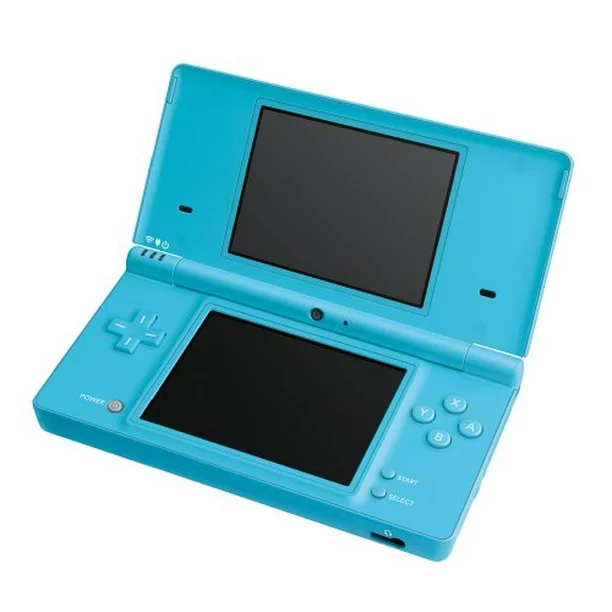
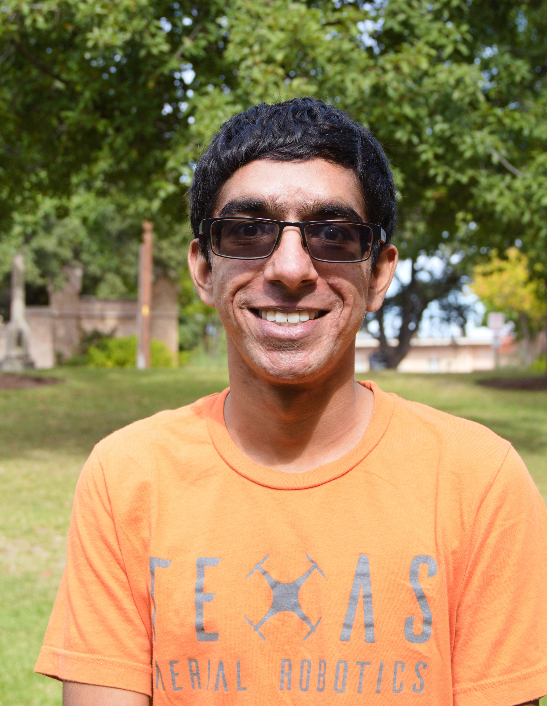

Ultraviolet Spectrometer (UVS) Operations - CakePHP project showcase
Umer SalmanCakeFest 2024
Agenda
- About me
- SwRI Space Science
- Europa Clipper Mission
- UVSOps Tools / Libraries
- UVSOps App Walkthrough
- Wrap-up / Q&A
Who am I?
Umer Salman, @umer936
-
 , San Antonio, TX
, San Antonio, TX
- BS ECE from
- PHP since the Nintendo DSi
- Robotics and cybersecurity
- Also like cars, tropical weather, building things
(DIY, arts and crafts, etc.)

SwRI Space Science
- Been using CakePHP since the 1.x versions
- I joined the org 3.52yrs ago
- 45+ CakePHP Projects supporting Space Science Operations
- Constantly improving with the CakePHP ecosystem through plugins and modularization
- Bootstrap
- Integrate with IDL, Python, and other space science codebases
Europa Clipper

Libraries We Use
| CakePHP | ORM, User Accounts, PHP (server-side), etc. |
|---|---|
| fabric.js | HTML Canvas for interfaces |
| vis-timeline | The final Flyby outcome |
| jQuery | AJAXing, etc. |
| jQuery UI | Windowed calculator |
| jQuery Xcalx | Excel-type calculator |
| jQuery Timepicker | Only timepicker with <1 sec timepicking |
| Bootstrap | Layout/styling/components |
| Sweetalert2 | Error notifications |
| Plotly | Graphing |
| momentjs | Timekeeping |
| Font Awesome | Icon graphics |
| Spectrum | Colorpicker |
To the Cake Application!

https://umer936.com/cakefest-2024/
Feel free to contact:
Slack: umer936
umer936@gmail.com
https://github.com/umer936